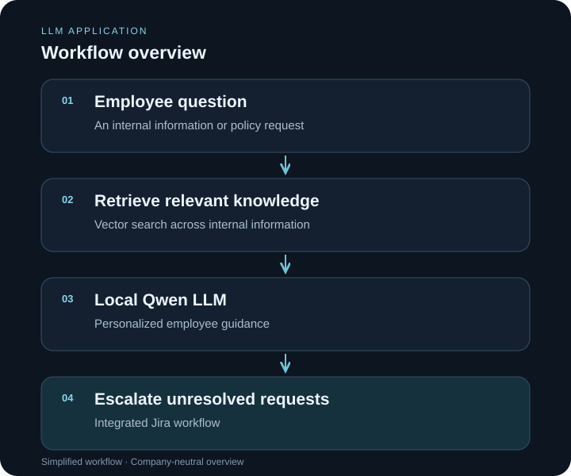

LLM application
On-Premises HR Knowledge Assistant
Internal knowledge retrieval and personalized employee guidance, with a structured path to Jira escalation.
My contribution
Designed and deployed the assistant and its LLM, retrieval, and escalation integrations.